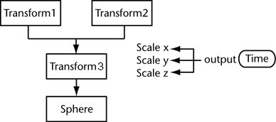
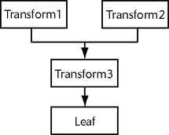
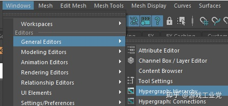
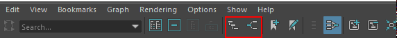
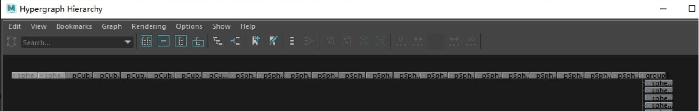
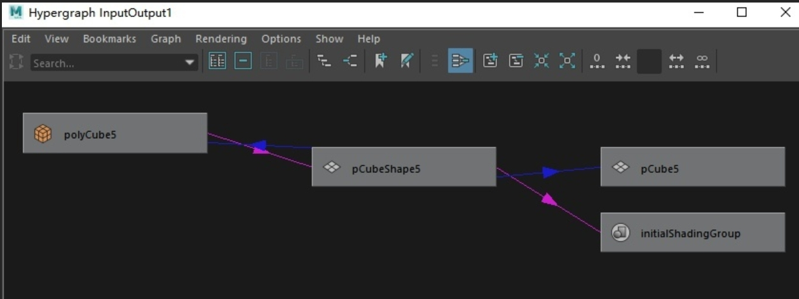
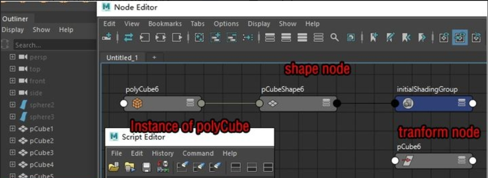

001-Maya API 概念整理
1. DG、DAG概念整理
DG：Dependency Graph 依赖图可循环，简单理解DG表示连接关系 
DAG：directed acyclic graph 有向无循环图，简单理解DAG表示父子（或层级）关系 
首先需要明确的是，DG/DAG 与 DG/DAG节点 是两个概念。DG/DAG是graph（图形），准确的说是对于节点结构的表现方式，DG/DAG节点则是节点。 DG和DAG的概念就是描述Maya的节点关系，DG是连接关系，DAG是父子关系；基本上可以认为maya当中所有的node都是DG节点，包括DAG节点
2. DG/DAG
Windows -> GeneralEditors 可以打开Hypergraph 其中hierarchy是以DAG的结构展现的 connections（连接）是以DG的结构展现的 
进入其中任意一个，点击图标也可以切换 
DAG/Hypergraph hierarchy/directed acyclic graph 在DAG模式中，场景中的所有DAG节点（关于DAG节点会稍后解释）都会全部以层级的方式显示出来 
DG/Hypergraph connections/Dependency Graph DG模式中，只有当前选中的DG节点且与之存在connection关系的节点会被显示出来 
Hierarchy（层级）/connection（连接） Hierarchy与connection（directed acyclic graph/Dependency Graph）区别在于direction（方向）和cyclic（循环），也就是两个node之间数据传输的方向和是否会是产生循环 hierarchy是很简单的父子结构，单纯的单向数据传输（继承）关系，用于tranform；connnection则复杂且自由的多 需要注意的是，hierarchy的关系在connection并没有被表现出来（没有线连接） 所以connnection只展现了hierarchy以外iade关系。Hierarchy关系需要进入hierarchy graph
3. DG/DAG节点
DG节点：基本上可以认为maya当中所有的node都是DG节点，包括DAG节点 DAG节点：只有两种DAG node，transform 和shape；shape永远是transform的child；一组transform+shape组成一组DAG 结构 官方对于DAG的描述： 从本质上说，DAG是instance（实例）从几何体中构造出来的过程的分解 In essence, the DAG is a breakdown of how an instance of an object is constructed from a piece of geometry
理解一下这个创造过程
cube来自cmds.polyCube create
create之后产生了一个polyCube的instance ：polyCube6
由polyCube6产生了shape：pCubeShape6
pCube6则是shape的transform

Outliner当中 的相关显示选项；Outliner当中默认是只显示DAG而不显示其他的DG，并且不显示shapes的；需要的时候可以打开

补充:
maya里面object是由tranform+shape 组成的 sphere0=cmds.polySphere()[0] cmds.polyShpere 所return的不是object name的string，而是一个list， list里面有2个string，一个是transform name，一个是shape name
import maya.cmds as cmds sphere=cmds.polySphere() #获得包含2个tring的list print(sphere) sphere0=cmds.polySphere()[0]#获得return的list当中的第一个string print(sphere0) sphere1=cmds.polySphere()[1]]#获得return的list当中的第二个string print(sphere1)